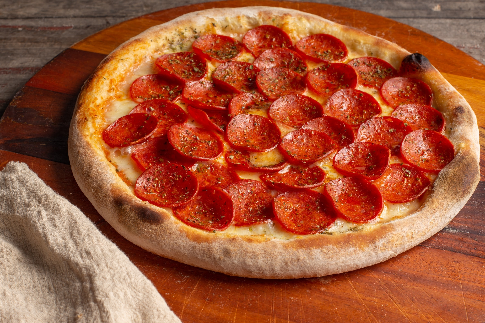
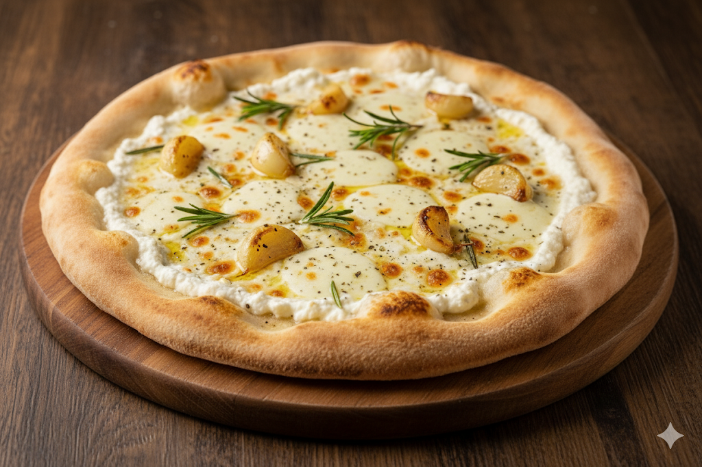
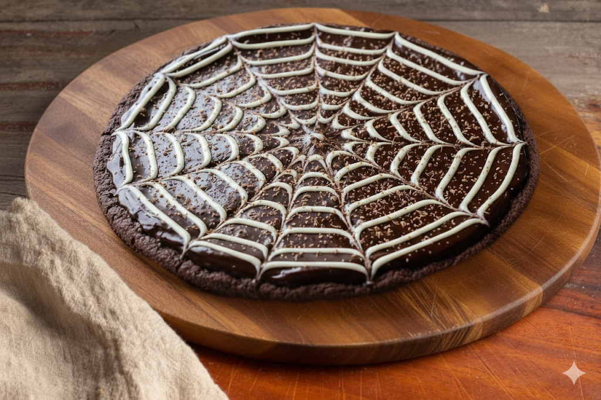

Williaurant
| Prato | Descrição | Preço |
|---|---|---|
| Margherita Tradizionale | Molho de tomate fresco, mussarela de búfala, manjericão e azeite extra virgem. | R$69,99 |
| Pepperoni alla Boa Viagem | Mussarela, pepperoni levemente apimentado e toque de orégano. | R$79,99 |
| Capricciosa | Molho de tomate, mussarela, alcachofra, presunto cozido, cogumelos e azeitonas. | R$89,99 |
| Diavola | Molho de tomate, mussarela, salame picante italiano e orégano. | R$75,99 |
| Vegetariana Mediterrânea | Abobrinha, berinjela, pimentões coloridos, cebola roxa e azeite. | R$79,99 |
- Pizza de Pepperoni
- Pizza Bianca (sem molho de tomate)
- Pizza doce
1. Pizza de Pepperoni
Uma explosão de sabor marcante: fatias generosas de pepperoni levemente crocantes, soltando aquele toque picante característico. O molho de tomate suculento contrasta com a camada de queijo derretido, criando um equilíbrio entre o salgado e o levemente apimentado. A massa macia por dentro e dourada por fora completa a experiência com um aroma irresistível.
2. Pizza Bianca
Delicada e sofisticada, essa pizza não leva molho de tomate, mas conquista pelo creme suave de queijos brancos derretidos. O alho assado adiciona um sabor adocicado e envolvente, enquanto o alecrim fresco dá um toque aromático inconfundível. Cada mordida transmite leveza e um sabor cremoso que derrete na boca.
1. Pizza doce
Uma tentação irresistível: a base crocante recebe uma generosa camada de creme de chocolate aveludado, coberta com fios de chocolate branco formando uma teia artística. O contraste entre o doce intenso do chocolate e a suavidade da massa cria uma sobremesa que é ao mesmo tempo crocante, cremosa e viciante.